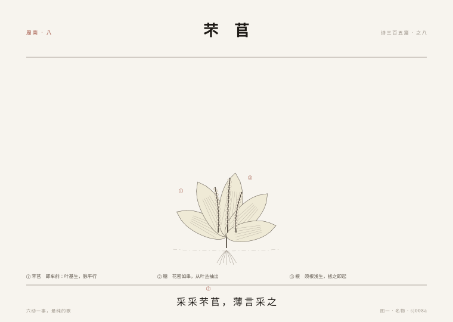
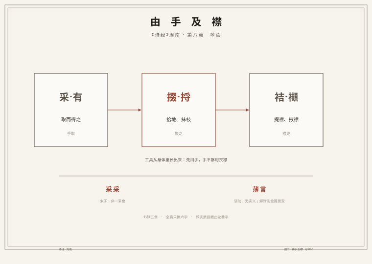

第八篇 芣苢
周南 · 之八 SJ008
朗读 · 普通话
依经文正文朗读，句读从文；不配乐、不改速、不加拖腔。
一 解题
诗三判：
- 谁在说：一群在野地里采车前草的女子。全篇没有一个「我」，也没有一句「我们」，只有动作——这是集体劳动时的歌，唱的人不必报名字。
- 说什么事：采。六个动作，六个动词：采、有、掇、捋、袺、襭。此外别无他物，别无他意。
- 为何编在此：前七篇从婚说到嗣、说到族、说到用人。此篇一落，落到最平常的一天——几个妇人，在野地里采草。周南至此把「大事」说尽，回头写「无事」。而「无事」正是前面所有秩序的结果。
《毛序》：「《芣苢》，后妃之美也。和平则妇人乐有子矣。」——把芣苢读作「宜子」之草，把采草读作「乐有子」。
朱子《诗集传》：「化行俗美，家室和平，妇人无事，相与采此芣苢，而赋其事以相乐也。」——「妇人无事」四字，是本篇最好的注。朱子不说它宜子，只说它「无事」。
本库的看法：这是三百篇里最纯粹的一首歌。
它不叙事、不抒情、不讽喻，只把六个动作依次唱出来。它的价值恰在「没有意义」——一首诗能只写「采」，说明这世道允许人把一天花在采草上。朱子「妇人无事」四字，比任何道德解释都重：无事，才是太平。
二 经文
第一章
采采芣苢，薄言采之。采采芣苢，薄言有之。
第二章
采采芣苢，薄言掇之。采采芣苢，薄言捋之。
第三章
采采芣苢，薄言袺之。采采芣苢，薄言襭之。
分章：毛传、朱子皆三章，章四句。每章两句一叠，「采采芣苢」重复六次。全篇只换六个字，是《诗》里换字最少的一篇。
三 韵读
| 一 |
采、有 |
之部 |
| 二 |
掇、捋 |
月部 |
| 三 |
袺、襭 |
質部 |
之部平缓，月部短促，質部更促。三章由缓入促，正合手上的动作由慢到快：先是「采」，从容；中段「掇、捋」手忙；末段「袺、襭」衣襟一兜，动作到了极处，韵也收到极处。
叠句是这首的骨。全篇六次「采采芣苢」，像歌里的副歌；六次之间插进六个动词，像劳动的节拍。这不是修辞，是节奏本身——它本来就是要唱的。
四 字义名物
- 芣苢（fú
yǐ）——车前。《毛传》「芣苢，马舄；马舄，车前也」。《尔雅·释草》同。叶基生、脉平行、穗细长，是它最好认的三处。
- 采采——采而不止，非一采。朱子「非一采也」；一说「盛貌」。本库取「采了又采」。
- 薄言——语助，无实义。「薄」为发语，「言」为语词。合起来相当于「就……」「便……」。不可解作「薄薄地说」。
- 采——取。
- 有——得而有之，采到了手。
- 掇（duō）——拾取，拾起落在地上的。
- 捋（luō）——以手抹取，成把地抹下来。
- 袺（jié）——提起衣襟兜着。
- 襭（xié）——把衣襟两角掖在腰带间，兜得更多。
五 今译
第一章
采了又采车前草，就去采它。采了又采车前草，就采到了手。
第二章
采了又采车前草，就拾起地上的。采了又采车前草，就成把地抹下来。
第三章
采了又采车前草，就提起衣襟兜着。采了又采车前草，就把衣襟掖起来兜。
译注：六句译文都保留「就」字，因为「薄言」就是这个语气——动作连着动作，不隔。
六 章旨
一章：手取。采、有——从「动手」到「到手」。这是采集的第一层：有和无之间。
二章：聚之。掇、捋——地上拾的，枝上抹的。这是第二层：零与整之间。
三章：襟兜。袺、襭——衣襟提起，再掖起来。这是第三层：少与多之间，也是「手不够用」的那一步。
三章之序，是一条极细的线：手 → 手加地 →
手加衣。工具从身体里长出来——先用手，再用襟。这一层一层的「不够用」，正是采集的真实进程。
七 诗教
- 赋：此篇是纯粹的「赋」，直陈其事，无兴无比。三百篇中「赋」之最纯者，此其一。
- 观：可观一事——一首诗可以只写动作而不写意义，而仍成立。这是《诗》的底气：它敢让「没有意思」的东西入诗。
- 群：此篇最宜合诵。六次「采采芣苢」一齐出口，是劳动号子的原型。它的「群」不在内容，在唱法。
- 怨：此篇无怨。它是三百篇里最轻的一篇，轻到没有阴影——而这轻，是前面的重换来的。
八 分寸与边界
- 不可把「宜子」之说强加。诗中无一字及于怀孕；「芣苢宜子」是汉人的引申（《毛序》），可存为解释史，不可当作诗的内容。
- 不可把六个动词读成同义反复。采（取）、有（得）、掇（拾）、捋（抹）、袺（提襟兜）、襭（掖襟兜），六个动作层次分明：从手到地，从地到衣。
- 不可把「薄言」解作「薄薄地说」「少说几句」。它是语助，无实义；解错则全篇语气都变。
- 不可把此篇读成「劳动的苦」。它通篇轻快，叠句回旋如歌；把它读成压迫，是拿现代的框架去套一首歌。
- 不可因「简单」而轻之。此篇的价值正在简单：它是《诗》里最接近「歌」本身的一首，剥到只剩节奏。
九 存疑
- 芣苢何物：毛传、《尔雅》皆以为车前；一说薏苡（旧有「芣苢即薏苡」之说）。本库从前说，图取其形。
- 「采采」之训：朱子「非一采也」，一说「盛貌」。本库取前者。
- 六动词是否递进：一说只是换韵凑足，无深意；一说由手及襟，层层推进。本库从前说之后的后者——即便原是凑韵，读出来的次序仍是活的。
- 是否「乐有子」：毛序之说。诗中无证，本库不取，只取「无事」。
- 是否妇人集体：朱子「妇人无事，相与采此」，明言集体。诗中「采采」重叠，亦近众声。本库从之。
十 跨典
- 《尔雅·释草》：「芣苢，马舄；马舄，车前。」——名物之祖。毛传即本于此。
- 《毛序》：「和平则妇人乐有子矣。」——汉人的读法。可引，不可从；它把一首歌读成了一条政教结论。
- 《周南·葛覃》：「葛之覃兮，施于中谷。」——同卷的采集诗。彼有「归宁父母」之旨，此则无旨。同是采，一有归宿，一无归宿；后者反而更近歌。
- 《豳风·七月》：「采荼薪樗，食我农夫。」——农事之诗，劳动有目的（为食）。此篇劳动无目的（只为采），两相对照，可见《诗》中「劳动」的两副面孔。
- 《礼记·乐记》：「诗，言其志也；歌，咏其声也；舞，动其容也。」——此篇近「歌」远「诗」：它的志几乎为零，声几乎是全部。
十一 双卡与图
双卡五对：
| 采采（不已） |
薄言（语助） |
| 采（取） |
有（得） |
| 掇（拾地） |
捋（抹枝） |
| 袺（提襟） |
襭（掖襟） |
| 手 |
襟 |

图一 · 芣苢车前 名物图

图二 · 由手及襟 义理图
读图三处：
- 叶脉平行：车前最硬的特征不是叶形，是脉。五条平行脉从叶基直贯叶尖，一眼可辨，不会与别的野草混。
- 穗如线：花穗细长，花密如串珠，从叶丛中抽出。诗里不写穗，但采的是叶与穗——图补诗之所略。
- 根须丛生：须根一丛，浅而不深。车前贴地而生，拔之即起，故「采」不难，「掇」亦不难——图的根，解释了诗的轻。